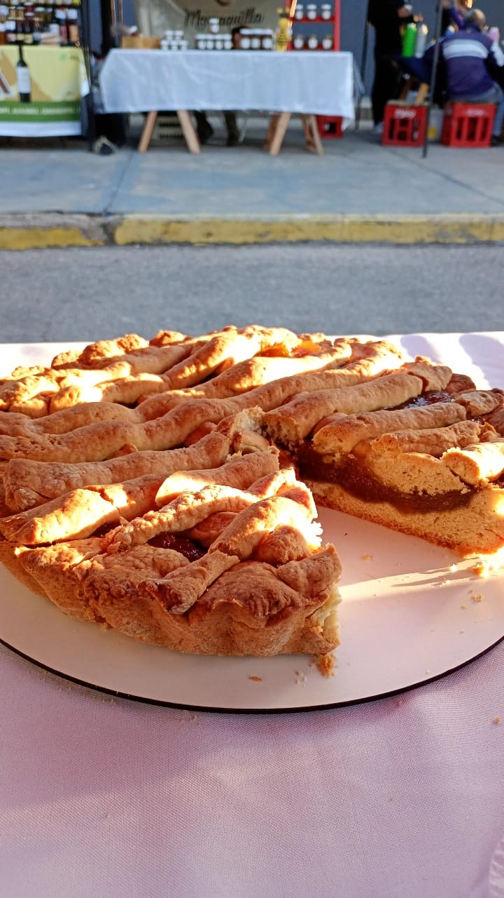

Desde 2022, en nuestro rincón dulce elaboramos repostería artesanal con ingredientes de calidad y mucho amor. Cada producto es hecho a mano, combinando sabores clásicos con toques creativos para ofrecerte una experiencia única. Trabajamos por pedido y realizamos delivery para que disfrutes de nuestros postres donde quieras. Ya sea para una celebración especial o para darte un gusto, tenemos el dulce perfecto para vos.

Ingredientes
- 100 grs de manteca
- 150 grs de azucar
- 3 huevos
- 250 grs de harina leudante
- 1 pizca de polvo de hornear
- 1 cucharadita de queso crema
- Agregar sabores opcionales:ralladura de limon esencia de vainilla,cocoa en polvo,ralladura de naranja
- Tiempo de horneado: 28 minutos, horneado a 150°c

Ingredientes
- 2 paquetes de galletitas dulces estilo maria
- 100 grs de manteca deretida
- 350 grs de queso crema tipo finlandia
- 250 ml de crema de leche doble crema
- Jugo de un limon
- 200 grs de azucar
- 3 huevos
- 30 grs de maicena
- Esencia de vainilla a gusto
- Tiempo de horneado: 50 minutos, horneado a 160°c

Receta de pastafrola (Molde 22 Cm)
Ingredientes
- 180 grs de manteca
- 120 grs de azucar
- 3 huevos
- 400 grs de harina leudante
- Esencia de vainilla a gusto
- Ralladura de limon a gusto
- 150 grs de membrillo o de dulce de batata
- Tiempo de horneado: 35 minutos, horno a 180°c